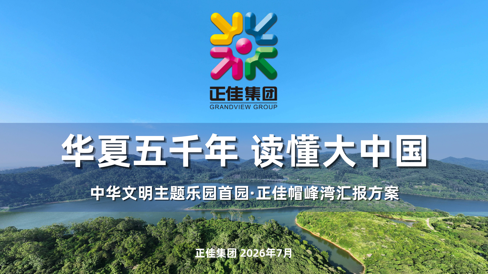

02
Cultural Tourism · Positioning
先找到文化的根，
再谈产品的形。
项目背景
这是一个体量大、参与方多的文旅度假区项目，核心命题是把商业综合体升级为具有岭南文化辨识度的文商旅目的地。
项目需要从大湾区客群、岭南文化与区域资源出发，判断帽峰湾真正缺什么、能提供什么，再把抽象文化转译成可被政府、企业与设计团队共同理解的产品体系和汇报语言。
我的工作
参与多版定位方案的资料梳理与内容撰写，协助搭建“岭南大庙会”的文化叙事与产品体系；整理项目介绍、建筑指标与专项汇报材料；根据多轮讨论意见，参与董事长汇报版和省级专项材料的迭代与校对。
关键动作
-
先判断市场真正缺什么 大湾区的夜生活并不稀缺，项目的机会在于提供高品质、强主题、能停留半日至一天的文商旅目的地。
-
把“岭南大庙会”拆成停留路径 围绕家庭与宠物友好客群，组合演出、餐饮、零售与娱乐，形成 4-5 小时的完整体验。
-
把文化概念落成具体产品 把建筑、饮食、戏曲与非遗转成可体验、可消费、可复述的宴席、演出与街区场景。
汇报页预览
选取策略封面、定位模型与产品细化页面，展示从文化判断到经营场景的推导路径。

岭南大庙会的策略思考。

从商业综合体到微度假目的地。

把岭南文化做成演出与宴席体验。
项目结果
多版定位方案迭代
2 类政府 / 企业高层汇报
1 套文化叙事与产品框架
复盘
大型文旅项目的定位不是一次性灵感，而是在文化价值、商业逻辑与落地条件之间反复校准。这段经历让我更理解“方案好看”和“方案能被执行”之间的距离。
注：本页仅展示个人参与的公开工作包与脱敏页面。客户内部经营数据、完整规划文件、未公开预算及原始汇报材料均未提供。